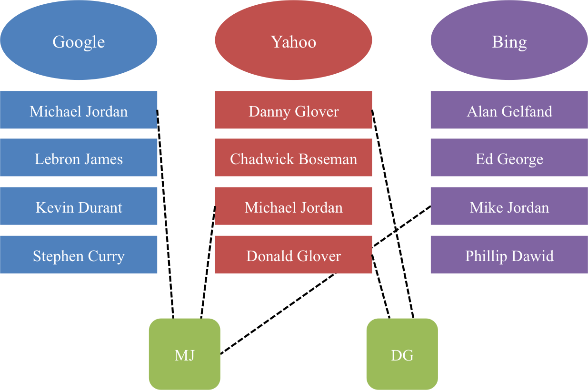
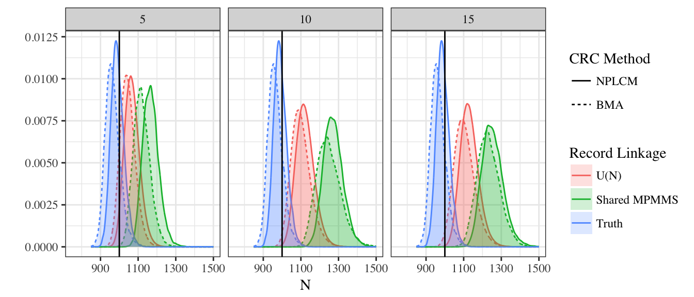

Population Sized Record Linkage
Andee Kaplan and Rebecca C. Steorts
-
Department of Statistical Science, Duke University
Overview
Provide an estimate for population size from multiple noisy capture datasets and quantify uncertainty in that estimate using Bayesian methods.
Motivating example

- “Historically, these numbers matter… because they can have a direct impact on policy, accountability and a global sense of urgency.”1
- Duplicated information regarding information about who has died from multiple sources (NGOs)
- Messy overlapping datasets with errors
- String data (names) as identifiers
Goal: Count the (population of) casualties and quantify the uncertainty in the estimate.
Graphical Record Linkage (RL)
Record linkage is merging together multiple datasets that have duplicate entries, often in the absence of a unique identifier.

Bayesian Hierarchical Model
Latent clustering approach2 with a package on CRAN (blink)3

Capture-recapture Methods (CRC)
Capture-recapture (CRC) is a method used to estimate a closed population’s size through the use of mark-release-recapture.

Bayesian Model Averaging (BMA)
- Model averaging approach allows for various types of dependency between lists through the use of decomposable Bayesian graphical models4 with a package on CRAN (
dga)5 - Likelihood Bayesian hierarchical log-linear models given model with certain dependency between lists
- Priors \(t\)-distribution for log-linear parameters, \(p(N) \propto N^{-1}\)
- Models averaged over all decomposable Bayesian graphical models to obtain final posterior distribution
- For \(3\) lists, this corresponds to 8 models, \(4\) lists - 61 models, \(5\) lists - 822 models
Bayesian NP Latent Class Model (NPLCM)
- Assumes independence between lists, used to model heterogeneity in the capture probabilities6 with a package on CRAN (
LCMCR)7 - Likelihood Multinomial multiple-capture estimation with finite mixture models for probability of capture where each component in the mixture has stratum-specific parameters
- Priors Dirichlet process model for strata mixture weights, \(\text{Beta}(1,1)\) for stratum-specific capture probabilities
- No need to specify the number of strata
- Can handle large numbers of recapture with moderate sample size
RL + CRC

Simulated Data Example
- Generated data in 5 lists according to the following stratified capture probabilities
| Strata | Proportion | List 1 | List 2 | List 3 | List 4 | List 5 |
|---|---|---|---|---|---|---|
| 1 | 0.75 | 0.07 | 0.31 | 0.17 | 0.31 | 0.14 |
| 2 | 0.25 | 0.94 | 0.77 | 0.85 | 0.90 | 0.91 |
- Strata are (1) large & hard to capture and (2) small & easy to capture population
- Add additional duplicates within each database at a 5% level
- Distort the duplicates – strings are distorted at three levels: \(5\%, 10\%, 15\%\) of characters
| fname | lname | by | bm | bd |
|---|---|---|---|---|
| jacobiT | aqns | 1981 | 11 | 30 |
| jacobLe | znns | 1981 | 12 | 15 |
| amaya | mcmellon | 1985 | 08 | 17 |
Results and Performance

Discussion
Takeaways
- Full posterior estimation via MCMC is computationally expensive, but using point estimate from RL for CRC poor performance
- NPLCM CRC method is for independent lists; works best for many lists ( \(\ge 4\) )
- BMA CRC method does not scale beyond \(5\) lists easily because need to precompute all valid dependencies between lists
- Both CRC methods sensitive to errors from RL and become biased
To do
- Much more extensive simulation with different levels of duplication and list inclusion probabilities
- Alternative prior specification for Bayesian RL that prioritizes singletons
- Investigate CRC methods that are robust to misspecifications and incorporating additional information (duplication) from RL
- Do this on real data!
References
(1) Specia, M. How Syrian’s Death Toll Is Lost in the Fog of War. The New York Times 2018.
(2) Steorts, R. C. Entity Resolution with Empirically Motivated Priors. Bayesian Analysis 2015, 10 (4), 849–875.
(3) Steorts, R. Blink: Record Linkage for Empirically Motivated Priors; 2017.
(4) Madigan, D.; York, J. C. Bayesian Methods for Estimation of the Size of a Closed Population. Biometrika 1997, 84 (1), 19–31.
(5) Johndrow, J.; Lum, K.; Ball, P. Dga: Capture-Recapture Estimation Using Bayesian Model Averaging; 2015.
(6) Manrique-Vallier, D. Bayesian Population Size Estimation Using Dirichlet Process Mixtures. Biometrics 2016, 72 (4), 1246–1254.
(7) Manrique-Vallier, D. LCMCR: Bayesian Non-Parametric Latent-Class Capture-Recapture; 2017.
(8) Australian Bureau of Statistics. Eber: Empirical Bayes Entity Resolution.